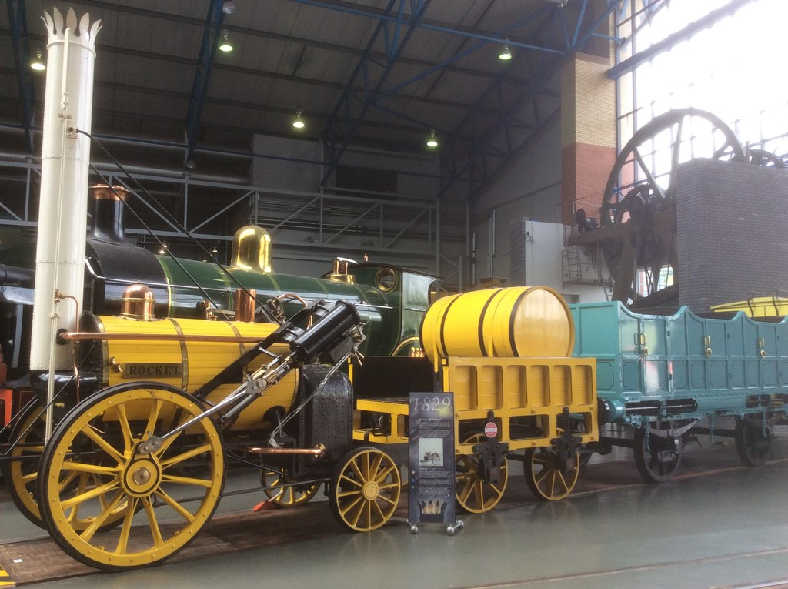
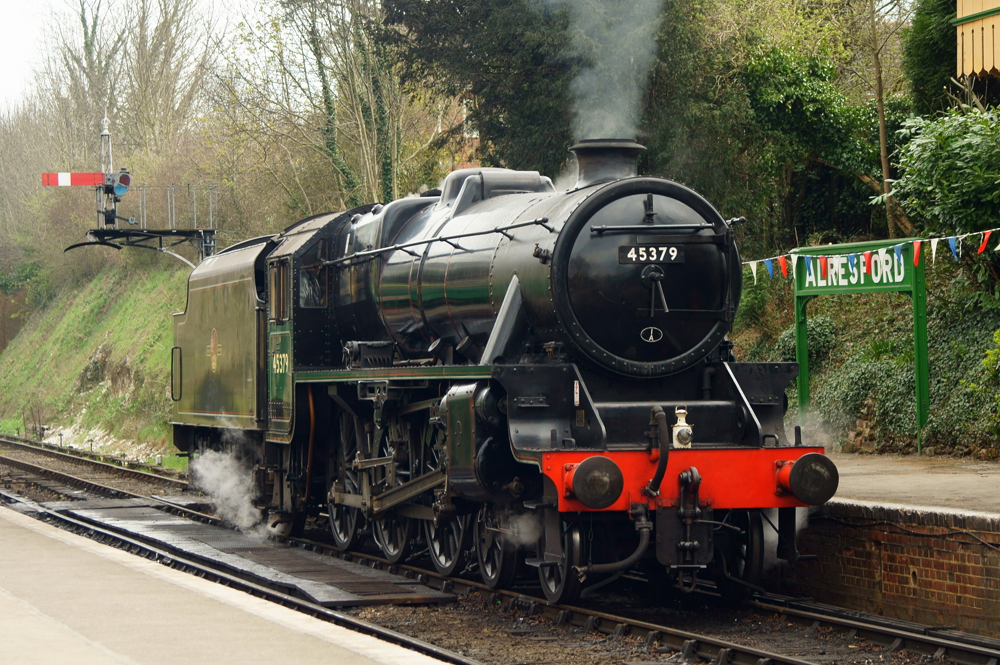
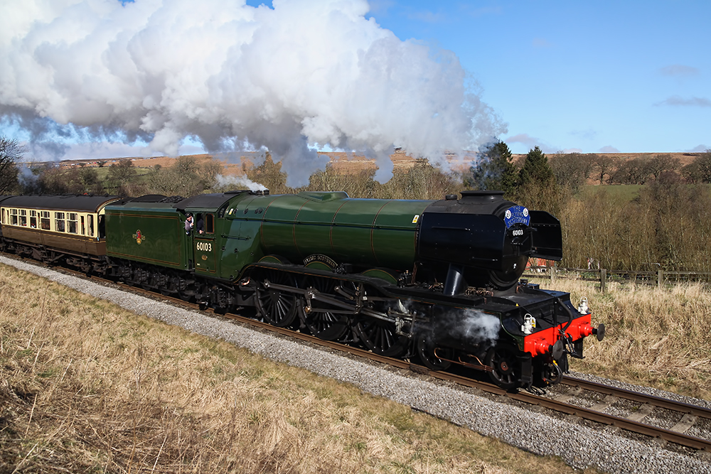

Railway Quiz
Do you have the railway knowledge of the Rev. W. Awdry or O. S. Nock? Then try this quiz!
Question 1
Which locomotive won the Rainhill Trials of 1829 CE?

Stephenson's Rocket
City of Truro
Mallard
Question 2
Which railway was founded by Isambard Kingdom Brunel?
London, Midland and Scottish Railway (LMS)
The Great Western Railway (GWR)
London North Eastern Railway (LNER)
Question 3
Known for writing his stories in The Railway Series (most of which would be later adapted to television), which heritage railway did the Rev. W. Awdry famously volunteer on?
The North Yorkshire Moors Railway
The Talyllyn Railway
The Bluebell Railway
Question 4
Which steam locomotive portrayed the steam locomotive that hauled the Hogwarts Express train in the cinematic adaptations of Harry Potter?
Olton Hall
Black 5
Stirling Single
Question 5
What year was York’s National Railway Museum was founded?
Question 6
What is the current number of the Flying Scotsman Locomotive?
1472
4472
60103
Question 7
Which of these locomotives was not made by LNER Engineer, Sir Herbet Nigel Gresley?
GWR 5700 Class
Flying Scotsman
Mallard
Question 8
Which is larger? Broad Gauge or Narrow Gauge?
Broad Gauge
Narrow Gauge
Submit Answers